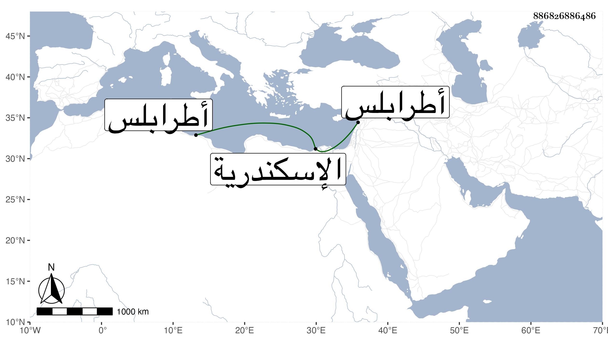

0902Sakhawi.DawLamic.ITO20230111-ara1.EIS1600.886826886486
Biography ID: 886826886486
1051
سودون الاسندمري . ممن أنشأه الناصر فرج وجعله أمير طبلخاناه وأميراخور ثاني ، وبعده قبض عليه المؤيد وحبسه باسكندرية مدة ثم أفرج عنه وأعطاه إمرة بطرابلس ثم أتابكيتها ، ولم يلبث أن قتل في وقعة التركمان على صافيتا من عملها وذلك في شعبان سنة إحدى وعشرين وهو مذكور في حوادثها من أنباء شيخنا .
